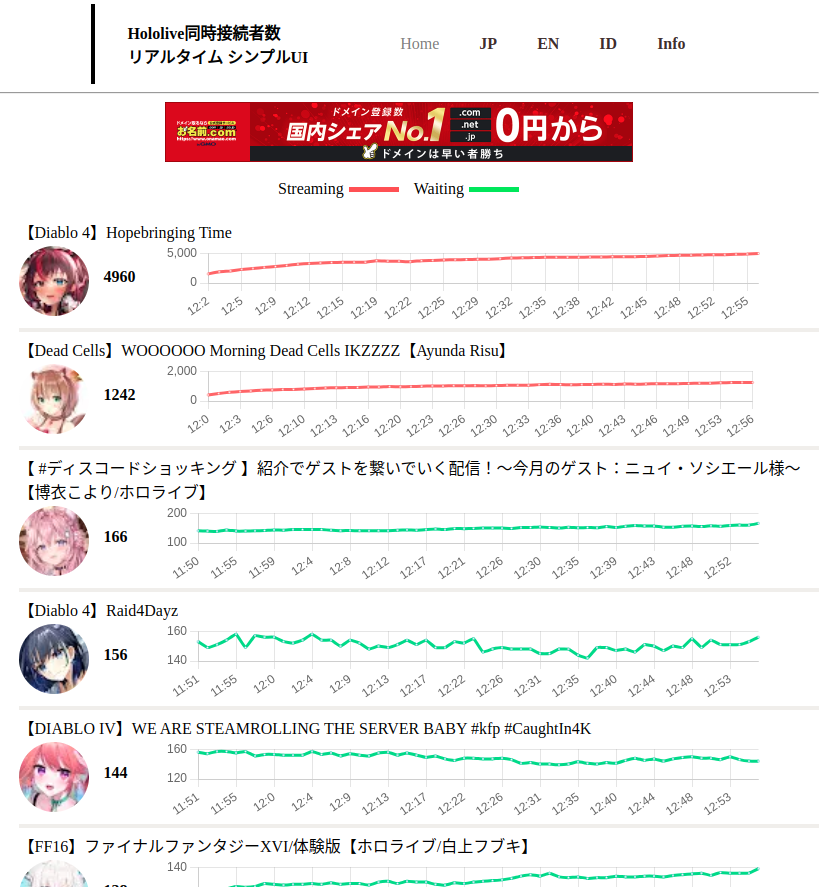

email : sambei13579@gmail.com
基本情報技術者、mos excel 2016 specialist
openBadge: システム開発プロセス

作成したwebサイトやシステムなどを掲載していきます。
何かご用件がございましたら、お気軽にメールしてください。
ちなみに就職先はまだ決まっていません。(´；ω；｀) ﾀﾞﾚｶﾔﾄｯﾃ
email : sambei13579@gmail.com
基本情報技術者、mos excel 2016 specialist
openBadge: システム開発プロセス
視聴者数をカウントするwebシステムを運用しています.
I run a web system that counts the number of viewers.
運用しているサイト↓↓↓
http://www.countstream.com/

以下は自作したプログラムコードです.
The following is the programme code created.